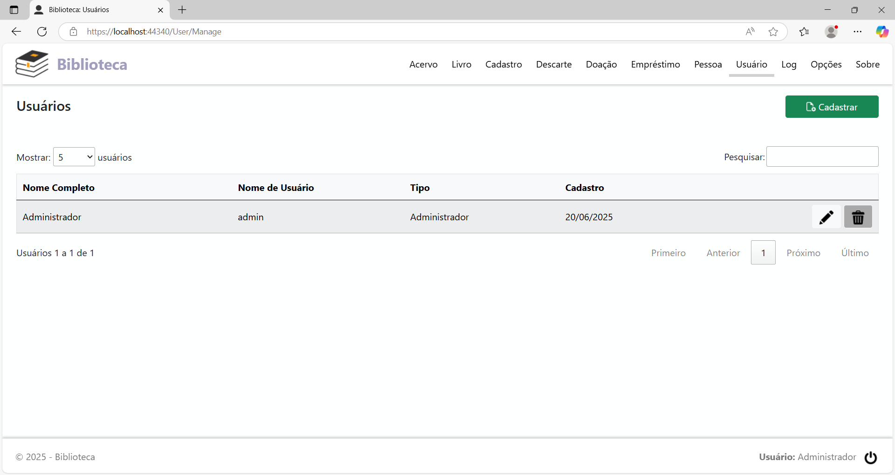
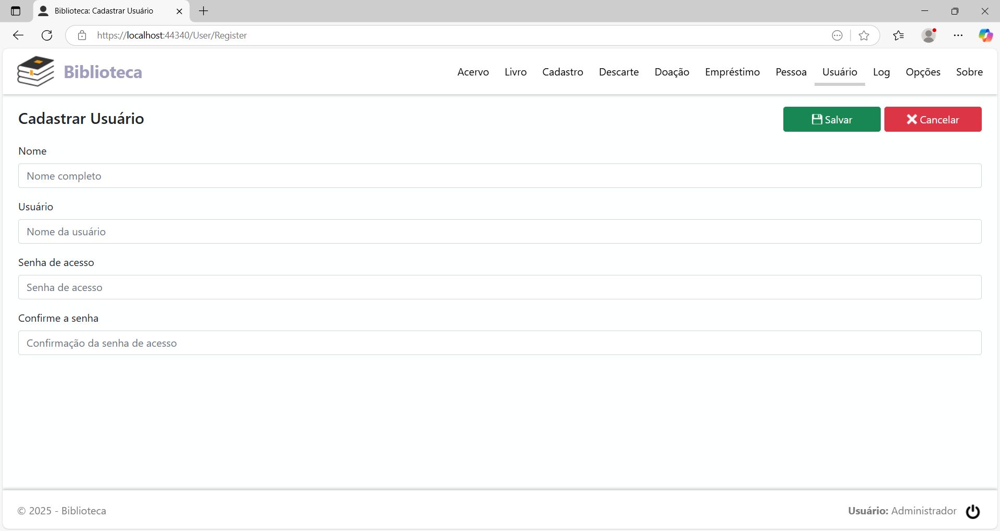
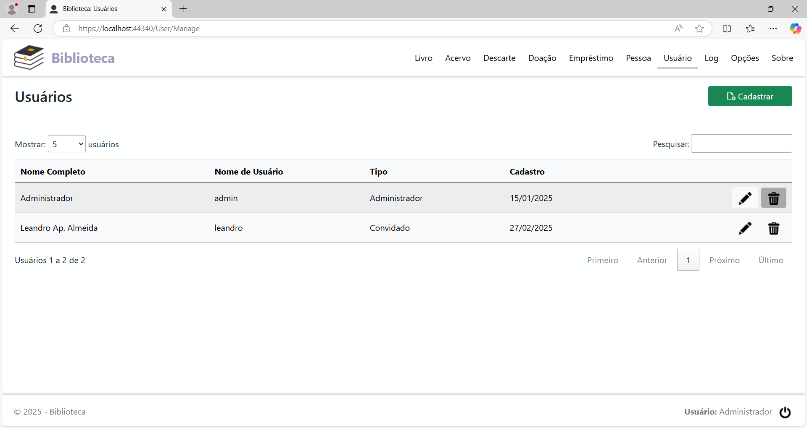
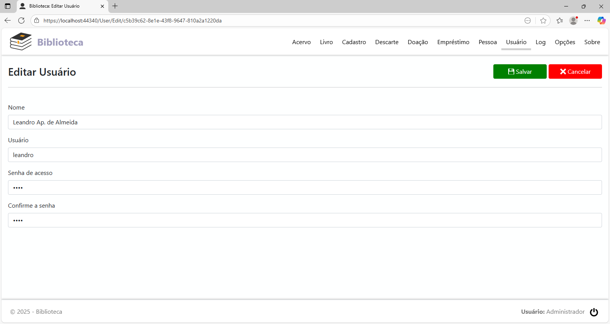
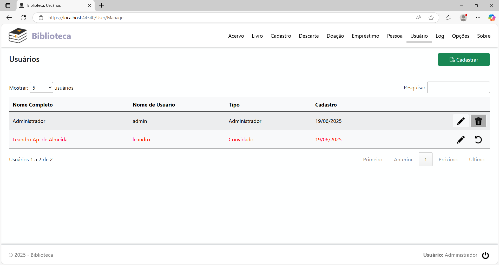
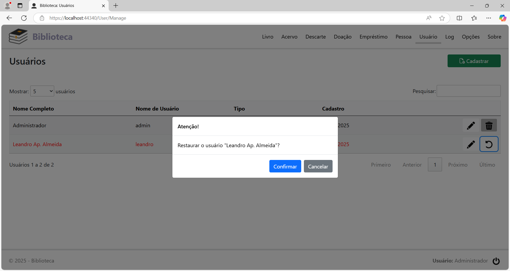

Menu Usuário
Clicando na opção de menu Usuário, será exibida a página Usuários. Nesta página é feito o cadastro/alteração de cadastro dos usuários que tem acesso à aplicação. Esta opção está disponível apenas para o usuário Administrador.
Ao fazer o login pela primeira vez, a página terá este aspecto:

Apenas o usuário Administrador, cadastrado na página de login no primeiro acesso ao sistema, aparece na lista.
Cadastrar um usuário Convidado
Para cadastrar um usuário Convidado, clique no botão Cadastrar. Será exibida a página Cadastrar Usuário:

Preencha os campos:
Nome: Nome completo do usuário convidado.
Usuário: Nome de usuário do convidado.
Senha de acesso: Senha de acesso do convidado.
Confirme a senha: Confirmação da senha de acesso.
Preenchidos os campos, clique no botão Salvar.
Após o cadastro, o novo usuário também aparece na lista:

Cada linha na tabela,
representando um usuário, tem 2 botões, localizados à direita da
coluna Cadastro, com
as seguintes funções, nesta ordem:
Editar o usuário: Alterar o cadastro do usuário.
Afastar o usuário: Tirar a permissão de acesso do usuário.
Alterar o cadastro de um usuário
Localize na lista o cadastro do usuário que será alterado e clique no botão Editar o usuário. Será exibida a página Editar Usuário, listando todos os campos do mesmo.

Altere o(s) campo(s) necessários e/ou mude a senha de acesso e clique no botão Salvar.
Afastar um usuário
Localize na lista o cadastro do usuário que será afastado e clique no botão Afastar o usuário. Será exibido o diálogo para a confirmação:
Clique no botão Confirmar para concluir.
Após afastado, a página Usuários fica com este aspecto:

Note que a cor do texto muda para vermelha e o botão Afastar o usuário é trocado pelo Restaurar o usuário. Se este usuário tentar fazer o login estando afastado, o acesso será lhe será negado.
Esta opção não está disponível para o usuário administrador.
Restaurar um usuário
Localize na lista o cadastro do usuário que será restaurado o acesso e clique no botão Restaurar o usuário. Será exibido o diálogo para a confirmação:

Clique no botão Confirmar para concluir. Após restaurado o acesso, o usuário passa a ter permissão de fazer o login na aplicação novamente.